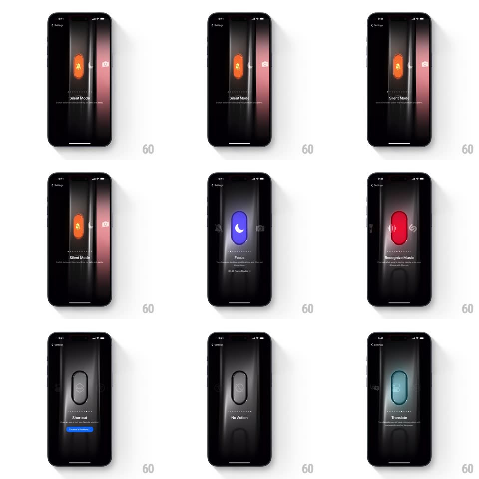

Media
Frame-by-frame

Rebuild this interaction 1:1: iOS Settings' Action Button picker - a horizontal swipe carousel of assignable actions rendered as glowing virtual buttons on a black stage, with 3D parallax between the incoming and outgoing panels, a color glow matched to each action, and a crossfading icon inside the button shape.

Rebuild this interaction 1:1: iOS Settings' Action Button picker - a horizontal swipe carousel of assignable actions rendered as glowing virtual buttons on a black stage, with 3D parallax between the incoming and outgoing panels, a color glow matched to each action, and a crossfading icon inside the button shape.
## Integration
Integration: stack-agnostic spec - springs given as stiffness/damping, timed motions as duration + curve; map every value to your framework and animation library of choice.
## Scene
Dark full-screen settings page ("< Settings" top-left). Center: a tall capsule-shaped Action Button render, lit from within - orange for Silent Mode (bell-slash glyph), yellow for Flashlight (torch glyph), dark gray for No Action / Controls. Below it a page-dot strip, the action name ("Silent Mode", "Flashlight", "Controls", "No Action") and a one-line description; Controls adds a blue "Choose a Control" button.
## Motion spec
Pattern: horizontal swipe carousel with 3D parallax and per-page color theming.
- Swipe moves pages 1:1; the outgoing panel recedes (scale ~0.92, slight rotateY toward the edge) while the incoming panel slides in from the side with a matching counter-rotation - a coverflow-style 3D shift.
- The ambient glow behind the button cross-fades to the new action's accent color (orange -> yellow -> gray) over the same gesture.
- The glyph inside the capsule crossfades/scales to the new icon (~200ms) once the incoming page passes 50%.
- On release, the nearest page snaps to center (spring ~300/30, ~350ms) and the page dots update.
## Calibration
- Color glow is tied to scroll position (interpolated), not swapped after the snap.
- 3D rotation is subtle (a few degrees) - depth cue, not a flip.
## Reduced motion
Plain crossfade between pages (200ms), glow color crossfades, no 3D shift.
## Don't miss
- The button capsule keeps its physical lighting: top edge highlight, soft inner shadow; the glow behind it does the color work.
- Page dots sit between the button render and the action label.